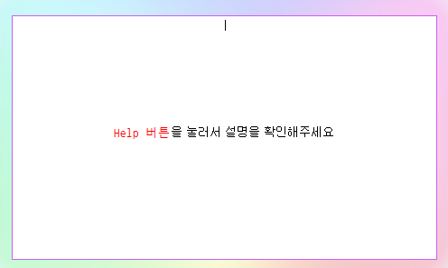

1. Lectures : properties 파일의 lectures.ini 파일 안의 강의, 재생시간 목록을 불러옴
이후 Run을 눌러 프로그램을 실행 할 때 이 파일 안의 강의 목록을 재생함
2. Append : 현재 텍스트박스(아래 사진 참고) 안에 쓰여있는 강의 목록을 "추가"함

텍스트박스에 쓸 때에는 절대 형식 외의 줄비우기(엔터), 띄어쓰기(스페이스) 금지
강의 목록은 lectures.ini 파일 안에 저장되고, 이전의 재생목록을 지우지 않음(추가함)
3. Save : 현재 텍스트박스 안에 쓰여있는 강의 목록을 "저장"함
이하 동일, 이전의 재생목록을 지우고 현재 쓰여있는 목록만을 새로 작성함(저장함)
4. Example : 강의 목록의 작성 형식 표시함 (자세한 형식은 "4. 실행" 페이지 참고)
※형식에 따라 강의를 적을 때에는 텍스트박스의 모든 텍스트를 지우고 작성※
5. Run : 프로그램을 실행함 (자세한 내용은 "4. 실행" 페이지 참고)
6. Check : "확인" 버튼을 인식하는지 확인하고 유튜브 자동재생이 활성화 되어있는지 체크함
자세한 내용은 여기참고 (어차피 쓸일 없음)
7. LogIn : 온라인 클래스 로그인 창을 띄움
8. Help : 도움말을 불러옴